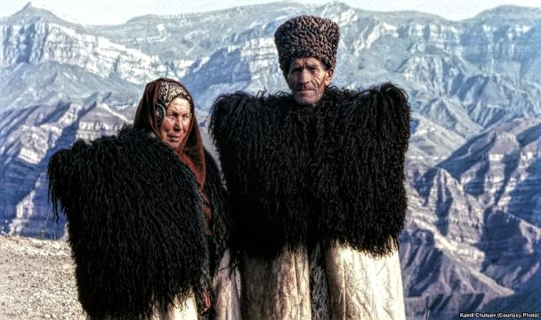

Геология
Кавказ — складчатые горы с некоторой вулканической активностью, которые сформировались (как и Гималаи) в эпоху Альпийской складчатости (примерно 28-23 миллионов лет назад). Горы состоят среди прочего из гранита и гнейса, предгорья содержат месторождения нефти и природного газа. Оценённые резервы: до 200 млрд баррелей нефти (для сравнения: в Саудовской Аравии по оценке 260 млрд баррелей
Население
На Кавказе живут более 50 народов (например: абхазы, аварцы, адыги (черкесы), азербайджанцы, армяне, балкарцы, даргинцы,чеченцы, грузины, ингуши, лакцы, лезгины, карачаевцы, осетины, табасараны и др.), которые обозначаются как кавказские народы. Они говорят на кавказских, индоевропейских, а также алтайских языках. Этнографически и лингвистически кавказский регион можно отнести к самым интересным областям мира. При этом заселённые районы иногда не разделены чётко друг от друга, между разными этническими группами.
Бо́льшая часть народов Кавказа являются мусульманами. Христианами являются русские, грузины, армяне, украинцы, а также большая часть абхазцев и осетин. Армянская Церковь и Грузинская Церковь являются одними из древнейших христианских церквей в мире[источник не указан 565 дней] и играют важную роль в сохранении национальной самобытности этих народов, которые на протяжении последних столетий были под иностранным правлением (турки, персы, русские).

Животные
Помимо повсеместно распространённых диких животных встречаются дикие кабаны, серны, горные козлы, а также беркуты. Кроме того достаточно часто встречаются дикие медведи, численность которых в отдельных ущельях достигает десятков особей. Крайне редко встречается кавказский леопард (Panthera pardus ciscaucasica), который переоткрывался лишь в 2003 году. Также редко встречается рысь. Последний раз её видели в 2009 году. В исторический период были также азиатские львы и каспийские тигры, но в начале нашей эры были искоренены полностью. Подвид европейского зубра, кавказский зубр, вымер в 1925 году. Последний экземпляр кавказского лося был убит в 1810 году.
На Кавказе очень много видов беспозвоночных животных, к примеру, примерно 1000 видов пауков там подтверждены до сих пор.